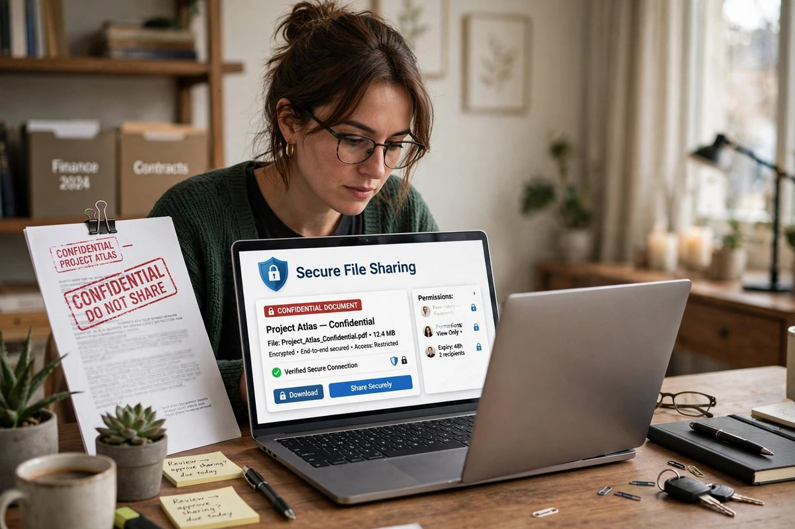
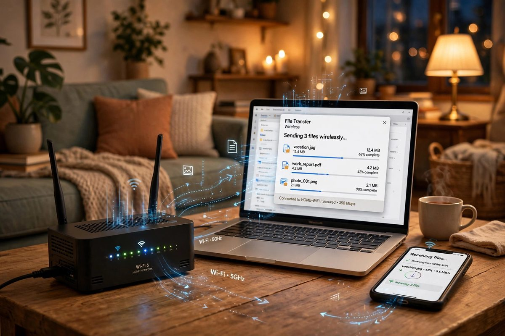
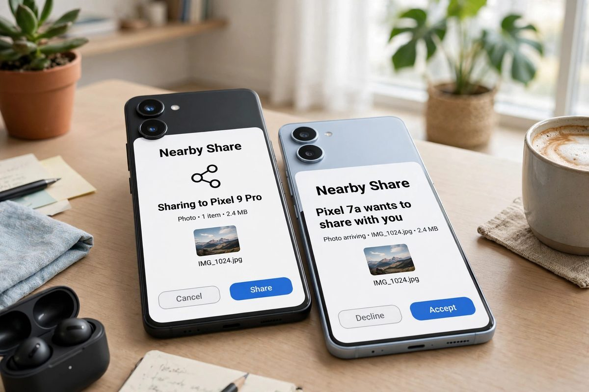
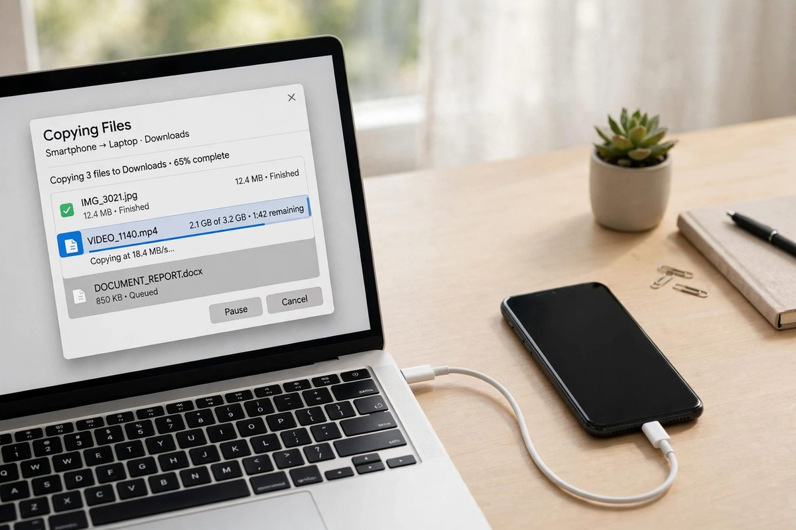
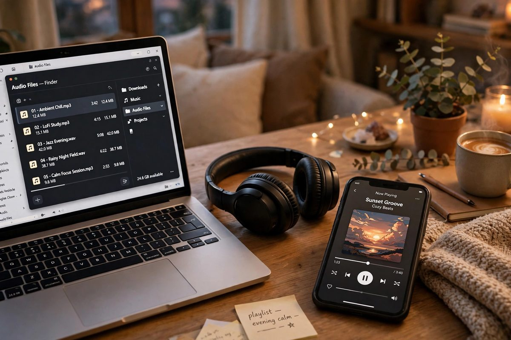
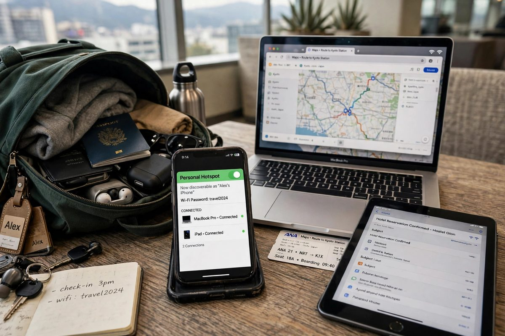
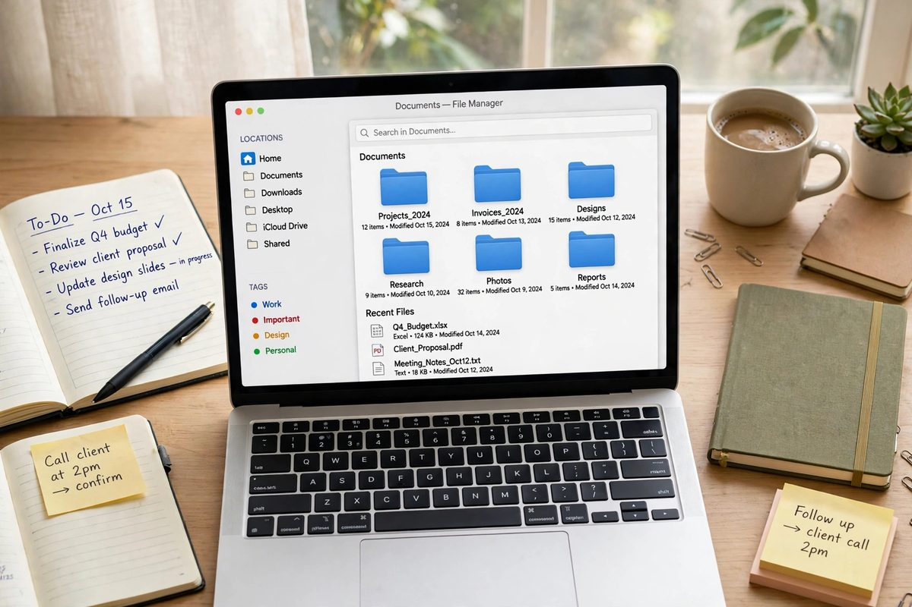

Guides
Original, practical guides.

How to Share Files from Phone to PC Quickly
Learn the fastest reliable ways to move photos, videos and documents from your phone to your computer without cables, confusion or lost files.

How to Share Files Without Internet: Offline Methods That Work
No Wi-Fi and no mobile data? These offline file-sharing methods still work between phones, tablets and computers.
How to Share Files Using a QR Code
A QR code can carry a link to your file or the text itself. Learn when QR sharing works, how to make one, and how to keep it private.

How to Share Large Files Fast Without Waiting Hours
Big videos, project folders and backups need a different approach. These methods move large files quickly and reliably.

How to Share Photos from Phone to Computer Without Losing Quality
Keep every pixel. These methods move your photos at full resolution, in batches, without compression or duplicates.

How to Share Files Between Android and iPhone
Android and iPhone do not share the same built-in tools, but files can still move between them. Here are the methods that work.
How to Share Files Between Two Laptops
Two computers, one file. These methods move documents, projects and media between laptops quickly, with or without a network.

How to Share Documents Securely and Privately
Contracts, IDs and personal files need more care than a holiday photo. Share sensitive documents without exposing them.

How to Share Files Over Wi-Fi at Home or Work
Your Wi-Fi network is a fast private road between your devices. Learn to use it for quick, cable-free transfers.
How to Share Videos Without Compression or Quality Loss
A video that arrives blurry or silent is worse than no video. Keep the original quality from phone to recipient.

How to Share Files Using Bluetooth: A Simple Guide
Bluetooth is on almost every device. Learn how to pair, send, and fix the slow or failed Bluetooth transfers.

Share Files with Nearby Share and Quick Share Explained
Send files to nearby Android phones and computers in seconds, with no cable and no upload to the internet.

How to Share Files with a USB Cable: The Reliable Method
A cable is boring and brilliant. Move files between phone and computer with no network, no compression and no waiting for uploads.

Why File Transfers Fail and How to Fix Them
Transfers that stop at 90 percent, missing files and slow speeds all have causes. Diagnose the problem and fix it fast.

How to Share Files Privately Without the Cloud
Keep your files off servers. Local sharing methods that never upload your documents to the internet.
How to Share Multiple Files at Once Without the Mess
Send a whole folder, a photo set or a project in one go, and make sure nothing is missing at the other end.

How to Share Files in a Small Work Team
Shared folders, clear names and simple rules keep a team moving without lost files, duplicate versions or confused emails.

How to Share Audio and Music Files Between Devices
Send songs, voice notes, podcasts and recordings without losing sound quality or getting the wrong format.

How to Share Files Using a Personal Hotspot
Turn your phone into a local network and move files between devices with no Wi-Fi router and no mobile data use.

How to Organise Shared Files So You Can Find Them Again
A shared file you cannot find is a lost file. Simple folders, names and a routine keep every shared file easy to find.